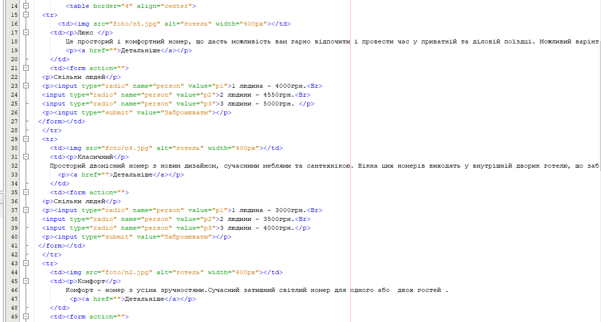
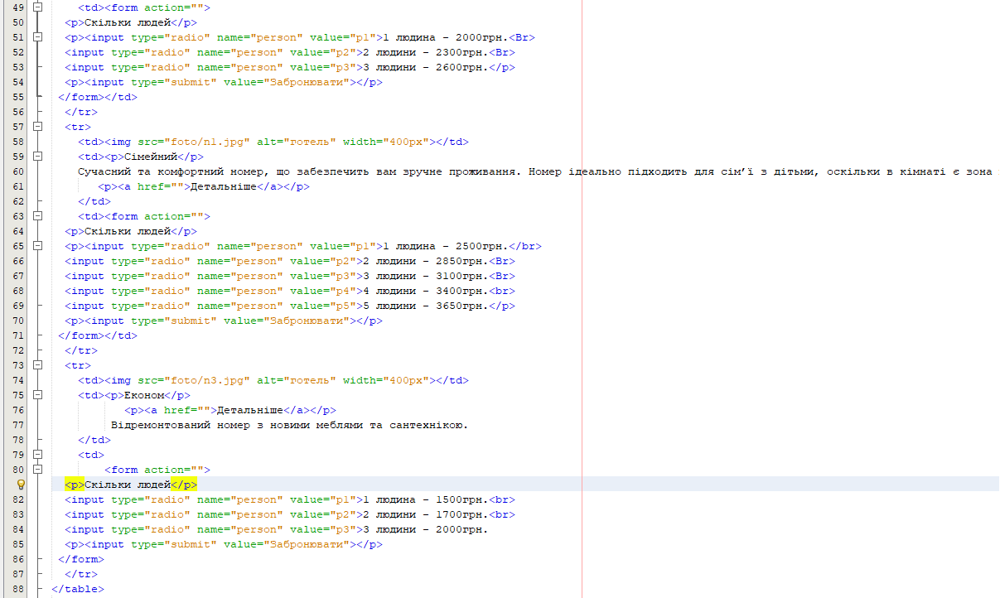
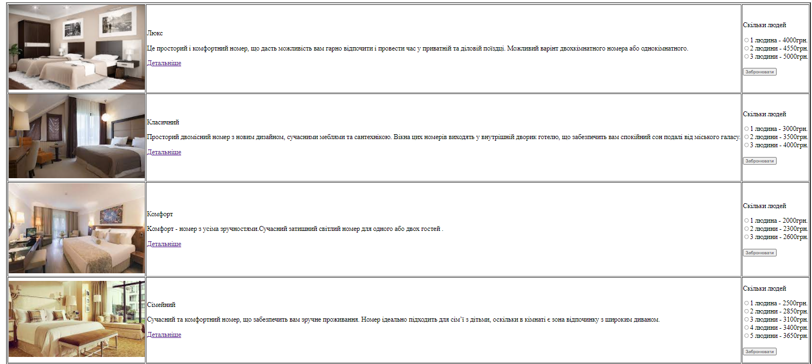
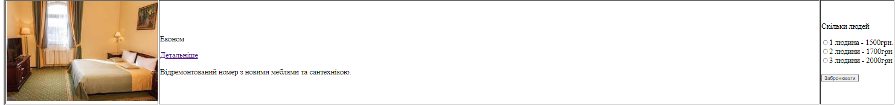
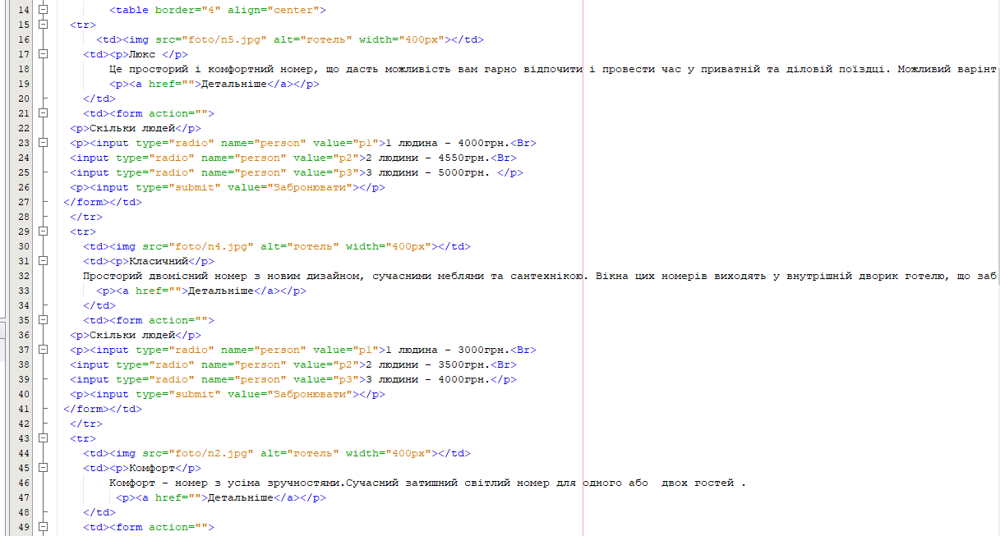
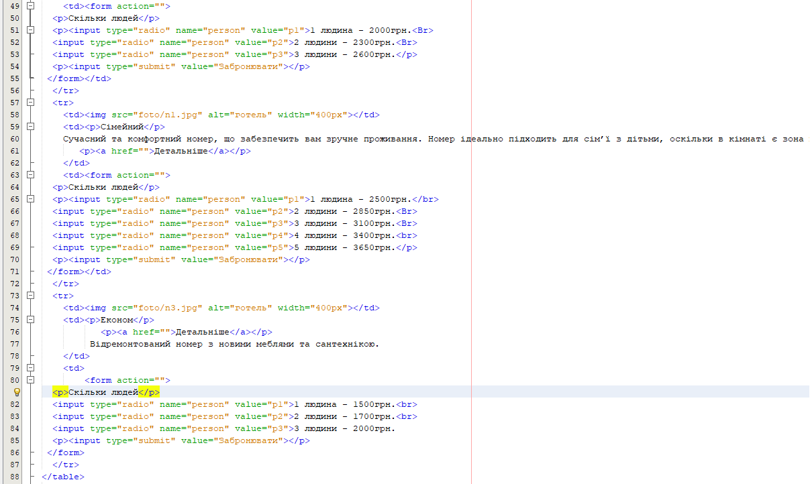
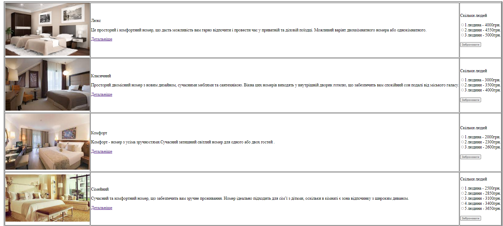
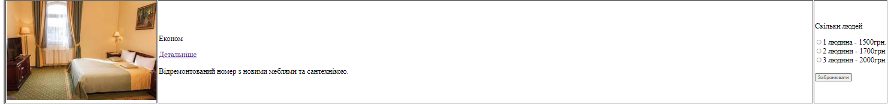

Туризм – це сфера соціально-економічного комплексу, яка в багатьох країнах перетворилась в високо розвинуту індустрію. Сучасна індустрія туризму – одна з найприбутковіших галузей світового господарства.
Частка туризму становить близько 10% світового валового національного продукту, 7% загального обсягу інвестицій, 11% світових споживчих витрат, 5% усіх податкових надходжень і третину світової торгівлі послугами. Так, обсяг послуг, наданих суб’єктами туристської діяльності в Україні рахується в мільярдах гривень: 2005 р. 4,47, 2006 р. 4,9, 2007 р. –5,2 млрд. грн.
У процес надання туристських послуг залучені також державні і суспільні організаційно-правові структури, які регулюють та координують розвиток туризму в регіоні, забезпечуючи умови ефективного функціонування системи туризму. В системі туризму тісно переплетені інтереси економіки і культури, безпеки і міжнародних відносин, екології і зайнятості населення, готельного бізнесу і транспортних організацій.
Готельний сервіс містить у собі цілий комплекс послуг для туристів і є ключовим чинником, що визначає перспективи розвитку туризму. Туристичні послуги, зокрема й у рамках готельного обслуговування, віднесені до соціально-культурних послуг і будуються на принципах сучасної гостинності та якісного надання послуг. Основними тенденціями розвитку готельної індустрії є:
Готельна індустрія як вид економічної діяльності включає надання готельних послуг і організацію короткострокового мешкання приїжджих. Для готелів характерні наступні ознаки:
Готелі розглядаються як головний, класичний тип підприємства розміщення, який має наступні властивості:
У готельному підприємстві послуги розміщення, ресторанного господарства та інші послуги доповнюють одна одну, у більшості випадків є взаємозалежними і сприймаються споживачем як єдине ціле.
Тема:СТРУКТУРА HTML-ДОКУМЕНТА. ВИБІР ПРЕДМЕТНОГО ГАЛУЗІ.
РОБОТА З ПОСИЛАННЯМИ, ТАБЛИЦЯМИ, ЗОБРАЖЕННЯМИ, ФОРМАМИ в HTML-ДОКУМЕНТІ.
Мета: придбати практичні навички роботи з HTML-документом, таблицями,формами, зображеннями, посиланнями.
Створити шаблон звітного HTML-документом для відображення результатів роботи всіх лабораторних робіт.
C:\Users\Dell\Documents\NetBeansProjects\web_1\public_html
 






